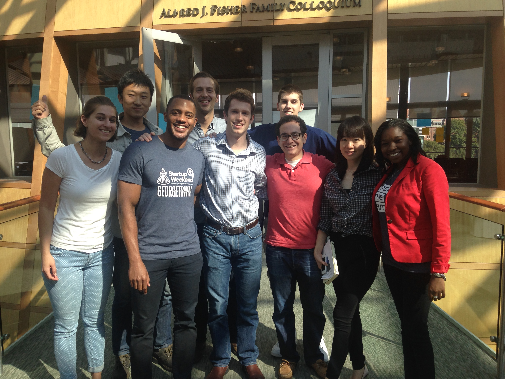
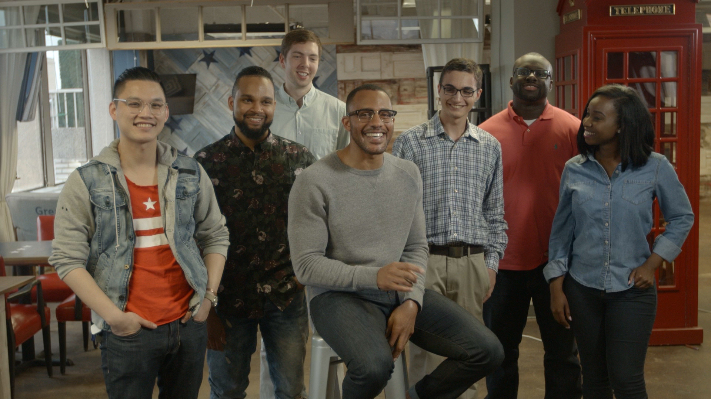

our movement.
HISTORY & ACHEIVEMENTS
SWAT was founded in 2014. Over the past year the company has won over 7 startup pitch competitions, been featured in major news outlets, invited to tech's largest conference and assembled a team of over 10 dedicated social innovation strategist and technologist.
-

September 2014
Startup Weekend Powered by Google
SWAT participates in its first pitch event, a weekend hackathon and is awarded Most Disruptive Startup. Startup Weekend is a 54-hour weekend event, during which groups of developers, business managers, startup enthusiasts, marketing gurus, graphic artists and more pitch ideas for new startup companies, form teams around those ideas, and work to develop a working prototype, demo, or presentation by Sunday evening. As of July 2015, Startup Weekend has reached 135 countries, involving over 210,000 entrepreneurs.
September 2014
Runner Up!
SWAT awarded second place at Media Rise Pitch Night, wins $500 + consulting services from HUGE, a digital branding agency known for it’s work with HBO GO and FIFA. Media Rise is a global non-profit volunteer-driven alliance that connects people and ideas to promote meaningful media.
-

October 2014
1776 Challenge Cup Semi Finals!
The team advances to the semi-finals of the 1776 Challenge Cup, “a worldwide tournament for the most promising, world-changing startups to win cash prizes ($150,000), make international connections and share their vision on a global stage.” 1776 is a global incubator and seek fund helping startups transform industries that impact millions of lives every day — education, energy & sustainability, health, transportation and cities.
-

January 2015
Social Good Tech Week SF Award!
Thousands of conference attendees vote SWAT as People’s Choice Award at Social Good Tech Week in San Francisco. Social Good Tech Week is a national conference featuring the coolest technology companies and highlighting stories of social good organizations and startups using technology to solve some of the world's most challenging problems.
-
January 2015
John Crawford Jr. Endorses SWAT
Mr. John Crawford Jr. was the father of John Crawford III, the 22 year-old man shot to death by Beavercreek police in a Walmart near Dayton, Ohio.
-

April 2015
Campus Kudos Pitch Winner!
SWAT takes home first prize at Campus Kudos Pitch Competition! Judges include Mudar Yaghi, CEO of AppTek (bought by ebay), and Alex Skatell, co-founder of IMGE, a digital media consulting firm that’s earned +30MM in revenue. CampusKudos is a Mountain View, Calif.-based startup that raised $550,000 last year and hopes to help students spread the word about their projects, gain feedback, meet potential teammates and build a personal brand. https://www.campuskudos.com/events/georgetown-pitch
-
Apr. 2015
FOLEY & LARDNER JOINS TEAM
Foley & Lardner is an international law firm ranked 39th on The American Lawyer’s 2011 AmLaw 100 rankings of U.S. law firms with $633,000,000 in gross revenue in 2010. The Firm serves as SWAT’s legal counsel.
-

April 2015
StartupHoyas Challenge Winner!
The StartupHoyas Challenge is the premier pitch event hosted by the Georgetown Entrepreneurship Initiative. Teams present a six-minute pitch followed by five minutes of Q&A from a panel of highly distinguished judges. Eight teams advance to the final rounds where they will compete for a prize pool including cash prizes of over $20,000, web development expertise, and entry into Georgetown’s Summer Startup Accelerator Program.
-
August 2015
Microsoft BizSpark Program Awardee
SWAT is certified as a Microsoft BizSpark Startup. Microsoft BizSpark is a global program that helps software startups succeed by giving them access to Microsoft software development tools, connecting them with key industry players, including investors, and providing marketing visibility to help with entrepreneurs starting a business.
-
September 2015
Web Summit: ALPHA Class of 2015
SWAT selected to present at Web Summit, the world’s largest technology conference with more than 30,000 entrepreneurs and investors in attendance. 40 startups that presented at Web Summit 2014 have raised more than $1 billion in funding in less than a year. https://blog.websummit.net/1-billion-in-9-months/
-
October 2015
IBM Global Entrepreneur Program Awardee
SWAT is certified as an IBM Cloud Startup, gaining access to go-to-market support, business mentorship & services, and technical expertise, to help us build, launch, and scale our company.
{kind=link}
{kind=link}